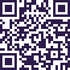

LobsyPartner
LobsyPartner▦ Overzicht
🦞 Mijn kandidaten
🔗 Partnercode & flyers
🎨 Logo & co-branding
🏢 Vestigingen
📄 Abonnement
Partnertype
UitzendbureauWerkgever
Werkgevers (HR) krijgen exact hetzelfde portaal.

Kasflex Uitzendbureau (fictief)
Vestiging Naaldwijk · abonnement Partner (voorbeeld)
🔒 Alleen jouw eigen kandidaten
Alleen wie met jouw code startte én toestemming gaf. Geen zoeken in de Lobsy-pool.
📄 Alleen het paspoort
Geen testantwoorden, ruwe scores of privé-voorkeuren.
⚖ Geen scores of ranking
Lobsy sorteert of filtert niet op geschiktheid. Jij voert het gesprek.
42
Gestart via jouw codesinds 1 sep 2026
31
Toestemming gegevenalleen deze zie je bij naam
19
Paspoort af4/4 tests, deelbaar
2
Toestemming ingetrokkentoegang direct gestopt
Kandidaten met toestemming (31)
Status: alle ▾Sortering: laatst gedeeld ▾
| Kandidaat | Paspoort | Gedeeld op | Beschikbaar | Talen | Sectoren | |
|---|---|---|---|---|---|---|
| Marta K. | Paspoort af | 1 okt | Direct | PL · EN · NL basis | Glastuinbouw, logistiek gekozen door kandidaat | Paspoort bekijken → |
| Andrei P. | Paspoort af | 30 sep | 13 okt | RO · EN | Techniek, logistiek gekozen door kandidaat | Paspoort bekijken → |
| Tomasz W. | Bezig · 3/4 tests | 29 sep | Direct | PL · NL basis | Logistiek gekozen door kandidaat | Paspoort bekijken → |
| Elena D. | Paspoort af | 27 sep | 1 nov | RO · IT · EN | Glastuinbouw gekozen door kandidaat | Paspoort bekijken → |
| Kees de V. | Bezig · 1/4 tests | 26 sep | Direct | NL · EN | Techniek gekozen door kandidaat | Paspoort bekijken → |
| Oksana M. | Paspoort af | 24 sep | 20 okt | UK · PL · EN | Glastuinbouw, productie gekozen door kandidaat | Paspoort bekijken → |
+ 11 kandidaten gestart zonder toestemming: alleen als aantal zichtbaar, nooit bij naam. Sortering alleen op datum/status — nooit op “geschiktheid”.
Jouw partnercode
KAS-FLX

lobsy.nl/p/KAS-FLX
Link kopiërenFlyer PL/RO/EN/NL ↓
Co-branding×
Jouw logo staat op het paspoort van je eigen kandidaten: “in samenwerking met Kasflex”.
×MOCKUP · fictieve data · alle namen, bedrijven en codes zijn verzonnen